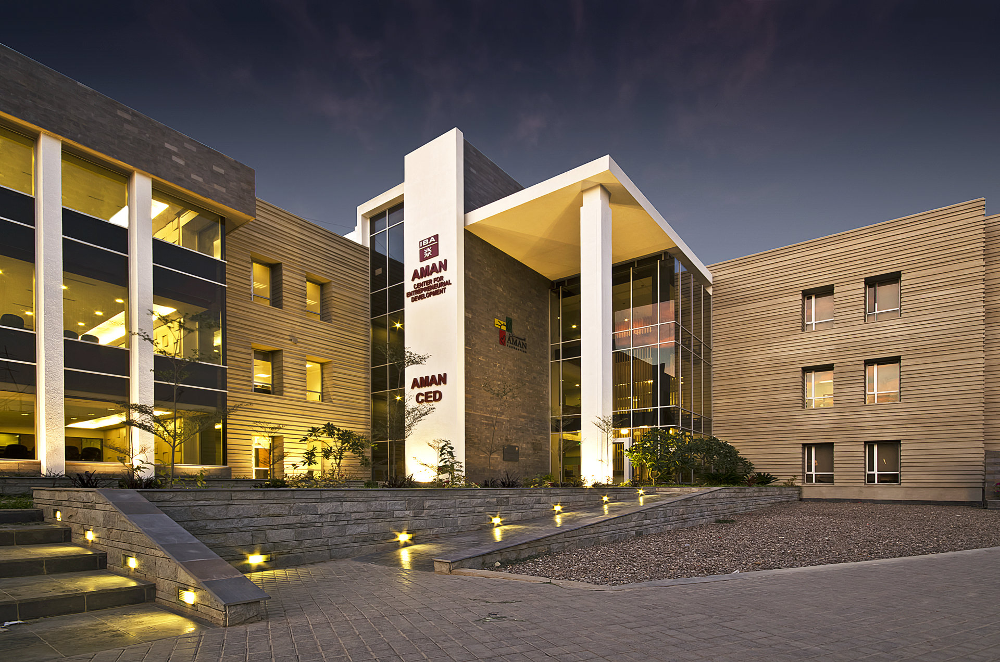
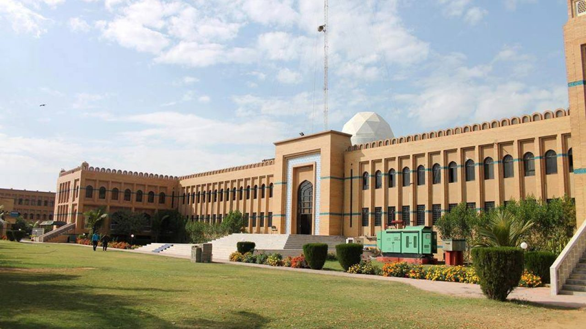
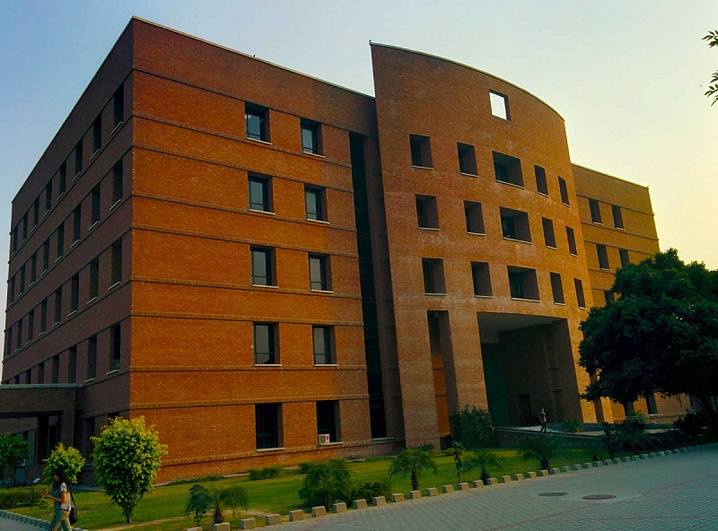
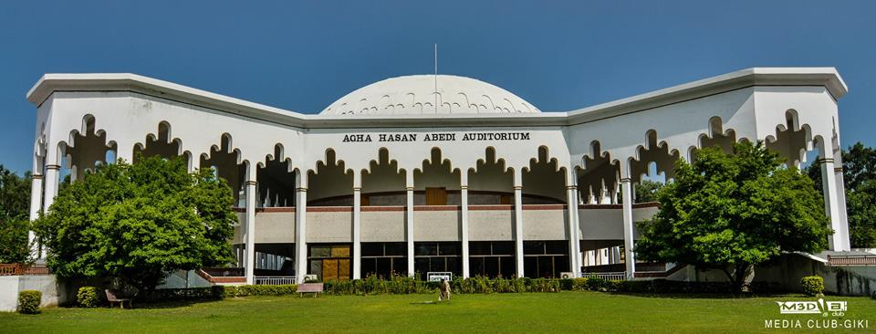
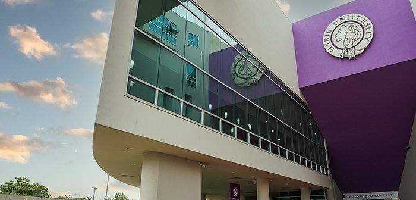

Pakistan is a dynamic country with a rich cultural heritage. Its education system is advancing, focusing on improving access and quality. With renowned universities and institutions, Pakistan is fostering future leaders in various fields, driving national growth and innovation.

Founded in 1955, the Institute of Business Administration (IBA) in Karachi is Pakistan's premier business school, known for its excellence in education, leadership, and innovation in business and management.

Founded in 2000, FAST University (FAST) is a leading institution in Pakistan, renowned for its cutting-edge education in computer science, engineering, and business, producing top professionals and innovators in technology and management.

Founded in 1984, (LUMS) is a top university in Pakistan, renowned for excellence in business, law, engineering, and social sciences, shaping future leaders and innovators.

Founded in 1993, GIKI (Ghulam Ishaq Khan Institute) is one of Pakistan’s top engineering and technology institutes, known for producing skilled professionals and innovators in science, technology, and engineering fields.

Established in 2014, (Habib University) is a leading liberal arts and sciences institution in Pakistan, offering interdisciplinary education and fostering critical thinkers and innovators for the global stage.